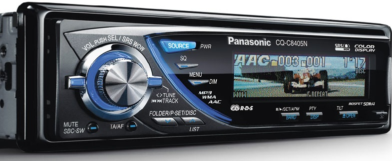

Наши услуги
Установка сигнализации с автозапуском и решение проблем в плохой работе автосигнализации
Установка сигнализации на авто является очень ответственным этапом в жизни вашего автомобиля. Здесь нет места кустарщине и непрофессионализму. В конечном итоге речь идет о сохранности вашего имущества и что еще важнее - о вашем спокойствии. Вы можете задать вопрос, а сколько я установил сигнализаций на автомобили за весь свой профессиональный путь? Счет идет на сотни. Я профессиональный установщик и у меня немалый опыт установки как на иномарки, так и с отечественные автомобили. Я буду безмерно рад применить свои знания и навыки на ваше благо. ВАЖНО!!! При желании установить сигнализацию именно у нас с нами необходимо связаться заранее до покупки сигнализации назвать марку автомобиля год выпуска наши специалисты дадут вам консультацию относительно оптимального выбора сигнализации на ваш автомобиль и какие дополнительные компоненты к сигнализации вам нужно будет дополнительно приобрести
Ремонт стартера
Исправная работа стартера любого автомобиля критичный фактор при эксплуатации автотранспорта. Несвоевременный выход из строя этого девайса способен серьезно осложнить жить автовладельцу, так как обычно, неясно по какой причине, стартер начинает упрямиться в самый ответственный момент, когда срочно необходимо прибыть на важную встречу или быть вовремя на работе. К счастью, перед тем как отказать полностью, стартер дает автовладельцу целый набор намеков, что пора провести профилактические мероприятия. Это могут быть, единичные отказы в работе при повороте ключа, характерные пощелкивания или непонятное жужжание. Если ваш стартер уже давал вам подобные знаки - срочно приезжайте!
Ремонт генератора
Так же, как и стартер, генератор занимает весьма важное место в навесном оборудовании двигателя. От стабильной работы генератора зависит все автомобильное электрооборудование, начиная от аккумулятора и заканчивая установленным дополнительным оборудованием - навигатором, магнитолой и т.д. Очень важно вовремя выполнять необходимые профилактические мероприятия, что обеспечить безотказную работу генератора, на протяжении всего срока службы автомобиля. В случае, если генератор все же вышел из строя, воспользуйтесь услугами автоэлектрика, что поможет вам быстро и недорого вернуть его в строй.
Установка автомагнитолы, усилителей, акустики, кросоверов, саббуферов

Установка автомагнитолы не является таким уж простым делом, как это может показаться на первый взгляд. Дело в том, что современные и не очень автомобили имеют огромное количество разъемов и контактных клемм, и неправильное подключение может иметь далеко идущие последствия для всего электрооборудования автомобиля. Что касается установки аудиосистемы - то главная сложность заключается не только в правильном расположении и подключении всех компонентов системы, но также и в грамотном совмещении высоко, средне и низко частотных динамиков с элементами салона автомобиля. Разумеется, электронное оборудование, такое как усилители, кроссоверы и эквалайзеры должны быть установлены в правильное место, чтобы гарантировать их качественную работу на протяжении всего срока эксплуататации.
Установка стеклоподъемников, датчиков дождя
Сегодня для многих автовладельцев стеклоподъемник является абсолютно незаменимым оборудованием. И определенная часть водителей, которые пользуются автомобилями, не оснащенными этим весьма удобным устройством нуждаются в качественной и профессиональной установке стеклоподъемников. Я занимаюсь установкой и ремонтом стеклоподъемников, на любые марки легковые автомобили и буду рад предложить вам свои услуги автоэлектрика!
Установка парктроника, видеокамер заднего вида, антирадаров
Парковочные радары или в просторечии - парктроники, удобное устройство позволяющие упростить процесс парковки автомобиля в сложных дорожных условиях с помощью ультразвуковых датчиков, расположенных на переднем или заднем бампере автомобиля. Я устанавливаю парктроники уже много лет и за это время накопил обширный опыт монтажа парковочных радаров на различные марки автомобилей. Воспользуйтесь услугами автоэлектрика для быстрого и качественного монтажа парктроника
Установка противотуманных фар, ксенона в противотуманные фары, дневных ходовых огней
Часто к автоэлектрикам обращаются с просьбой установить противотуманные фары, даже в случае, если владелец нечасто оказывается в сложных погодных условиях. Дело в том, что противотуманные фары выгодно использовать не только по главному назначению - т.е. езде в уловиях недостаточной видимости, тумане, снегопаде и т.д., но также и при вождении в темное время суток - в качестве дополнительного освещения неровностей дорожного покрытия. Для качественной установки необходимы услуги автоэлектрика.
Устранение любых неисправностей электрооборудования автомобиля, отмотка одометра (пробега автомобиля)
Услуги автоэлектрика включают в себя ремонт и диагностику любого автомобильного оборудования, так или иначе использующего при своем функционировании электричество. Если вы столкнулись с неисправностями в элекрооборудовании своего автомобиля, тогда во избежании усугубления ситуации - как можно скорее позвоните квалифицированному автоэлектрику.
|